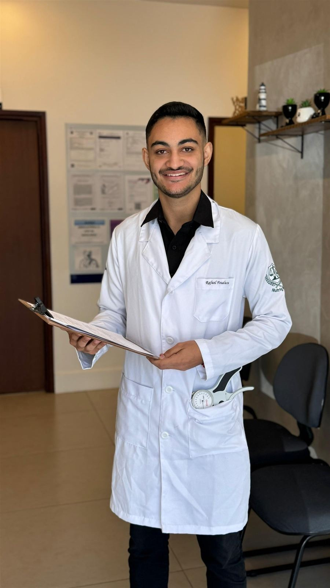
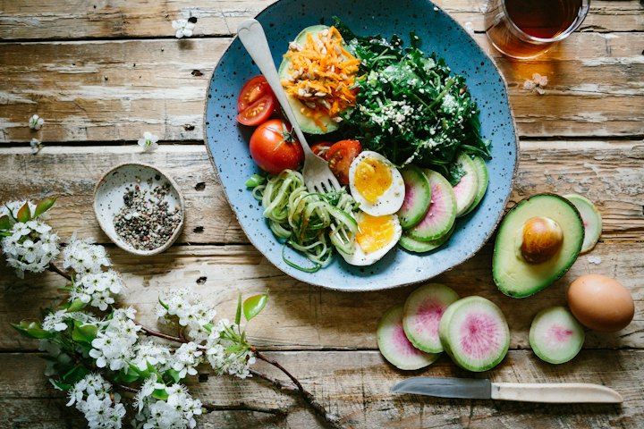
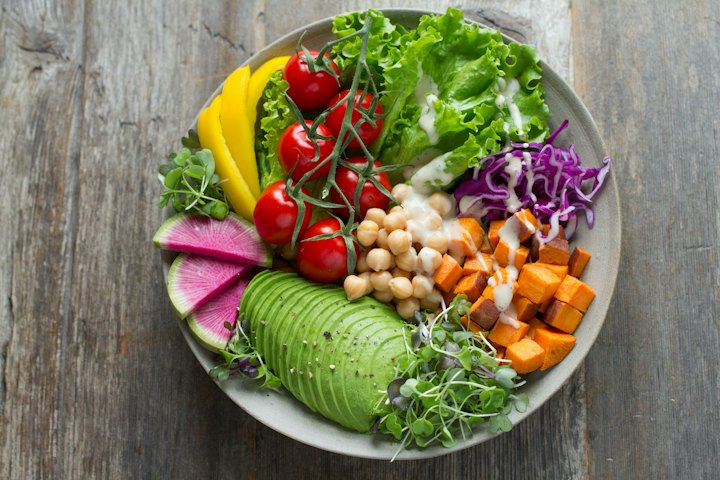
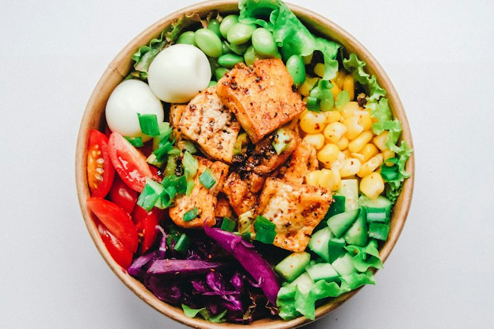
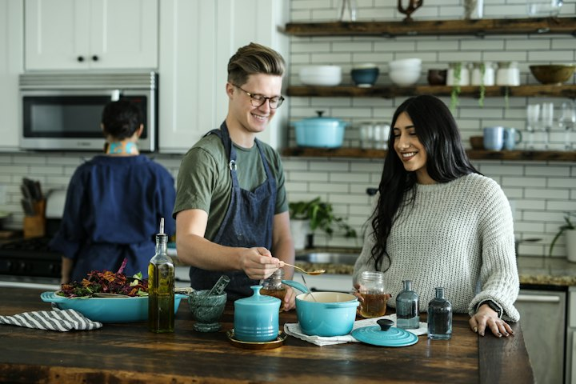

Você sabe o que comer. O difícil é às nove da noite.
Sou o Rafael Fosaluza, nutricionista em São João da Boa Vista. Além do cardápio, eu olho para quando, por que e como você come. É isso que faz o plano durar depois da segunda semana.

- Registro
- CRN-3 93386
- Presencial
- Na sua casa, em São João da Boa Vista e região
- Online
- Por vídeo, para qualquer cidade do Brasil
Em toda consulta eu pergunto: de 0 a 10, quanta fome você sentia antes de comer?
Quem costuma chegar ao meu atendimento

Quem come bem de dia e perde o controle à noite
O almoço é certinho, mas depois das oito vem o pacote de bolacha. Quase sempre o problema começa de manhã, com o café pulado ou um almoço pequeno demais. A gente ajusta o dia para a noite deixar de ser uma briga.

Quem já fez várias dietas e voltou ao peso de antes
Corte de carboidrato, jejum, cardápio de 1.200 calorias. Funcionou por um tempo e depois não deu mais. Aqui o plano é montado com a comida que você já tem em casa e com as saídas de fim de semana incluídas.
Quem treina e não vê a alimentação acompanhar
Distribuição de proteína ao longo do dia, o que comer antes e depois do treino e como bater a meta sem viver de frango com batata doce.
Quem recebeu um exame alterado
Glicemia, colesterol, triglicérides ou pressão fora do ideal. O plano é feito em cima dos seus exames, e os retornos acompanham a evolução.

Quem come fora quase todo dia
Restaurante por quilo, lanche no trabalho, delivery. Você aprende a montar o prato onde já come, sem precisar levar marmita todo dia.
Do primeiro encontro aos retornos
O acompanhamento é contínuo. Entre uma consulta e outra você fala direto comigo, e o que acontece na sua semana muda o plano.
Primeira consulta
Na sua casa ou por vídeo. Conversamos sobre sua história com a comida, rotina, sono, treino e exames, e eu registro suas medidas.
Plano no aplicativo
Você recebe o plano no aplicativo Dieto, montado com os alimentos e horários que cabem na sua semana.
Diário alimentar
Você registra as refeições no aplicativo e eu acompanho de perto. Assim os ajustes saem do que aconteceu de verdade, não da memória.
Retornos e evolução
Nos retornos, revemos medidas, diário e exames. Evoluções e medidas ficam salvas no aplicativo para você acompanhar.
Seis perguntas rápidas
Responda e veja por onde eu começaria no seu caso. No final, as respostas vão para o meu WhatsApp e já chegam escritas, assim a primeira conversa rende mais.
Leva menos de um minuto e nada é enviado até você tocar no botão.
Duas formas de consulta, o mesmo acompanhamento

Na sua casa
Atendimento domiciliar em São João da Boa Vista e região. Eu vou até você, e isso conta a favor da consulta: dá para olhar a geladeira, a despensa e o lugar onde você realmente come.
- Sem deslocamento nem sala de espera
- Medidas feitas no seu espaço
- Plano montado com o que já existe na sua cozinha
Online
Consulta por vídeo, para qualquer cidade do Brasil. O plano, o diário e as evoluções ficam no mesmo aplicativo da consulta presencial.
- Horário que encaixa no seu trabalho
- Contato direto entre as consultas
A mudança alimentar que fica começa na sua relação com a comida, não só no que vai para o prato.Rafael Fosaluza
Rafael Fosaluza
Sou nutricionista clínico, registrado no CRN-3 sob o número 93386, com especialização em nutrição comportamental. Trabalho com nutrição baseada em ciência e com estratégias adaptadas à rotina de cada paciente.
Na prática, isso quer dizer um plano sem alimento proibido, sem cardápio impossível de seguir na quarta-feira à noite e com ajustes feitos a partir do seu diário.
No Instagram @nutrirafaa eu mostro receitas, comidas do dia a dia e as safras do mês.